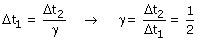
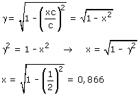
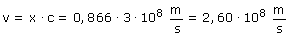

| El rectángulo representa un recinto que se mueve
respecto al observador 1 con velocidad v
Observador 1 (Laboratorio): Observador 2 (Recinto) Aplicando la conversión de tiempos resulta:  Conociendo γ se puede calcular la velocidad del recinto. Este cálculo resultará más fácil si expresamos la velocidad como un porcentaje de la velocidad de la luz: v =x·c  La velocidad de la nave espacial es un 86.6% de la velocidad de la luz.  |